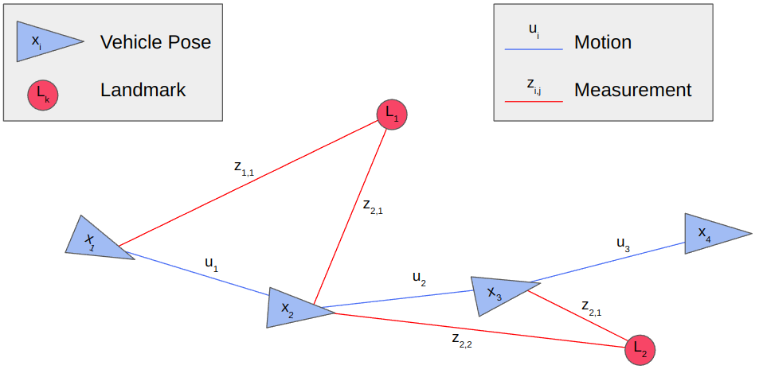
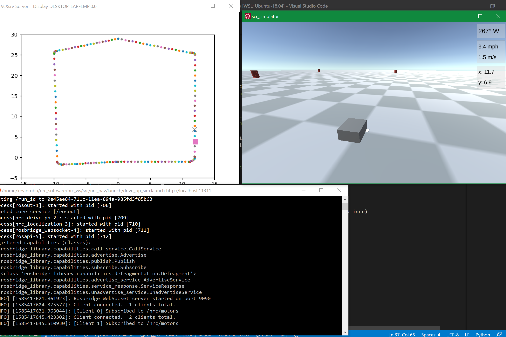
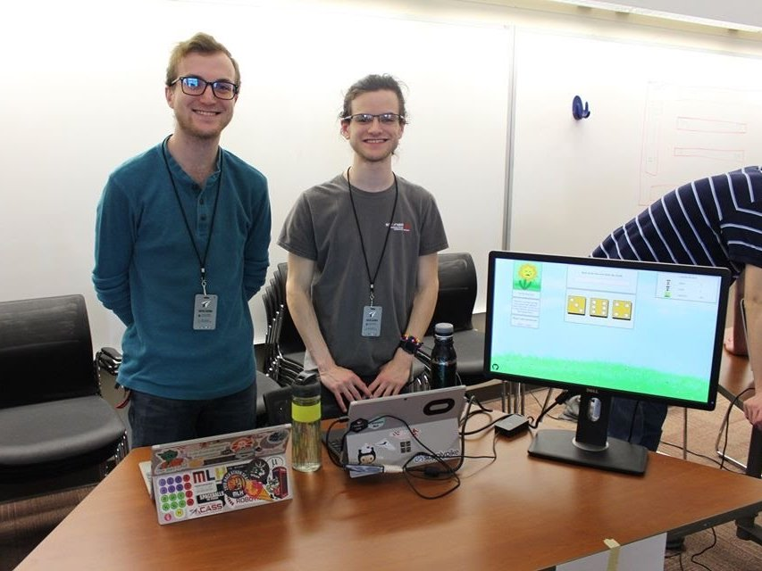
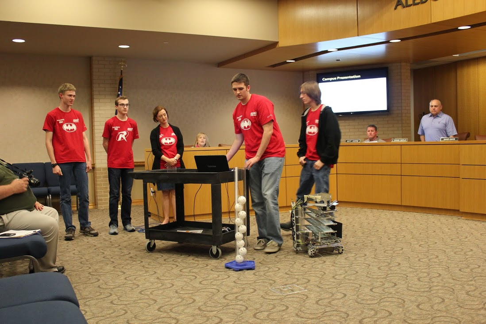

Kevin Robb Designs
2023
MS Thesis: Coarse Map Navigation (CMN)
- Implemented CMN pipeline to perform localization and navigation tasks using hand-drawn maps.
- Created architecture to run discrete CMN on a physical robot.
- Extended discrete CMN to a more robust localization framework using several different perception methods.
- Developed proof-of-concept for continuous state/action-space CMN.
Pose-Graph SLAM Implementation

- Final project for MATH-7332: Riemannian Optimization @ NEU.
- Derived Pose-Graph SLAM for history of robot poses in SE(2) and landmarks detections in R^2.
- Implemented as new localization node in my custom simulator.
2022
EKF-SLAM Personal Project

- Custom simulator in ROS Noetic, including measurement generation, command execution, and live visualization.
- Derived EKF & UKF for online landmark-based SLAM with a 2D mobile robot.
- Local path-planning & navigation with A* and pure pursuit.

MichelARMgelo Robot Arm Drawing Project

- Final project for CS-5335: Robotic Science & Systems @ NEU.
- Used an Interbotix PincherX 150 robot arm with a custom end-effector to draw with a marker.
- Derived equations to generate smooth marker-tip trajectories on flat, concave, and convex surfaces.
- Created ROS Noetic architecture to plan and execute drawings.

ORB_SLAM3 Implementation

- Final project for EECE-5554: Robotics Sensing & Navigation @ NEU.
- Implemented the visual SLAM package ORB_SLAM3 to use my own data.
- Gathered an imageset using the NUance autonomous car.
- Wrote an exhaustive setup guide on github.

2021
Turtlebot3 Exploration Project

- Final project for EECE-5550: Mobile Robotics @ NEU.
- Wrote a ROS codebase for a turtlebot3 to autonomously map any closed space and identify all AprilTags.
- Used the Cartographer ROS package and a modified Explore Lite to perform frontier exploration.
- Wrote a custom particle filter to perform Monte-Carlo localization.

Intelligent Ground Vehicle Competition, Auto-Nav Challenge
- Led a team of students in building the Aluminum Whale, an autonomous driving robot.
- Won 1st place & Rookie of the Year at the 2021 IGVC Auto-Nav event.
- The robot was able to navigate through a road-like course, avoiding traffic barrels and remaining within painted lanes.
- Implemented an EKF for localization, and used Computer Vision techniques to identify obstacles and lanes in a local map.
Engineering Physics Senior Design Project

- Implemented a Kalman Filter to estimate the state of a simulated 2D mobile robot, and used evolutionary computation methods to optimize its parameters.
- This allowed a basic linear KF to track the robot pose just as well as a manually tuned EKF with a proper nonlinear motion model.
- This project was my Engineering Physics capstone @ OU.
Fantasy Dice
- An all-in-one character sheet importer, dice roller, and video streaming app for playing Dungeons & Dragons remotely.
- Won 2nd place overall & Best Use of Google Cloud at Hacklahoma 2021.
2020
SCR Software Challenge
- In-house competition that my team in Sooner Competitive Robotics ran in simulation for Summer 2020, since our in-person competitions were cancelled due to covid.
- Individual challenge in which each person implemented an entire ROS software base to complete the task of navigating to a goal waypoint in a randomized environment.
- Optional intermediate waypoints, higher obstacle density setting, and faster time all contributed to a better score.
- My implementation used a reactive controller based on LiDAR data to avoid obstacles while naively steering toward the next GPS waypoint.
National Robotics Challenge, Autonomous Vehicle Competition
- Built a small autonomous racing robot that runs on a known, static course.
- Created trajectory planning system to maximize speed.
- Implemented pure pursuit for navigation with a PID for motor control.
- Competition was cancelled due to covid.

Stemmy
- A web-game that encourages groups to connect together in lobbies and race to complete math problems.
- I designed the back-end logic for handling lobbies, leaderboards, and the game itself using socket.io in python.
- Won 3rd place overall in Hacklahoma 2020.

2019
Mercury Remote Robot Challenge
- This competition mimicks a far-away robot being teleoperated by a driver who cannot physically see or interact with the vehicle.
- Drive team was more than 80 miles away while running the course, seeing only through the robot's onboard camera and sensors, and sending control commands back over the internet.
- All mechanical components were 3D-printed, and the control software was designed to minimize latency.
- We scored 2nd-highest among all teams, with the fastest course completion time.
Bee Clicker
- Bee Clicker is a web-game that makes you care about the bees.
- I made all the art for the game, and worked on the JavaScript backend.
- Top Ten Hack at Hacklahoma 2019, with the theme "Save the Bees!"
- Made some improvements after the event, and the game is still playable online!
On Reinforcement Learning, Nurturing, and the Evolution of Risk Neutrality
- Goal of this project was to explore the effect of nurturing on the evolution of risk adversity (or lack thereof) in a population.
- Created a Java codebase to simulate many generations of agents choosing among safe vs risky, high-payout options.
- Found that a population with nurturing enabled risk-neutrality to develop, while the individualistic populations tended to adopt extreme risk-aversion.
- My paper was published in the OU student journal THURJ in 2019, and won the Undergraduate Libraries Research Award 1st place scholarship.
2018
Robogames' Autonomous 3kg Sumobot
- We created a small robot which used a state machine to switch modes between defending itself and attempting to push the opponent out of the sumo ring.
- I was the freshman team captain for this competition, ensuring objectives were met and organizing logistics such as our travel to the event in California.
- Won 5th place at the international RoboGames 3kg Autonomous Sumo event.

2017
FTC 6566 - Velocity Vortex
- Built a robot to pick up colored balls and shoot them into movable baskets.
- Also identified the correctly-colored side of beacons and pressed the correct button.
- As team captain, I led team Circuit Breakers to the World Championship in the 2017 season, Velocity Vortex.
- I've never been more proud of a project than our 2017 robot, The Demented Crab.
2016
FTC 6566 - ResQ
- High school competition to build a small robot to compete in 2v2 matches, with a different game each year.
- Built a robot to extend an arm outwards to grab onto the top of a ramp and climb up it.

2015
FTC 6566 - Cascade Effect

- High school competition to build a small robot to compete in 2v2 matches, with a different game each year.
- Built a robot to collect balls into a basket, then raise it up with a scissor-lift to deposit them for points.
